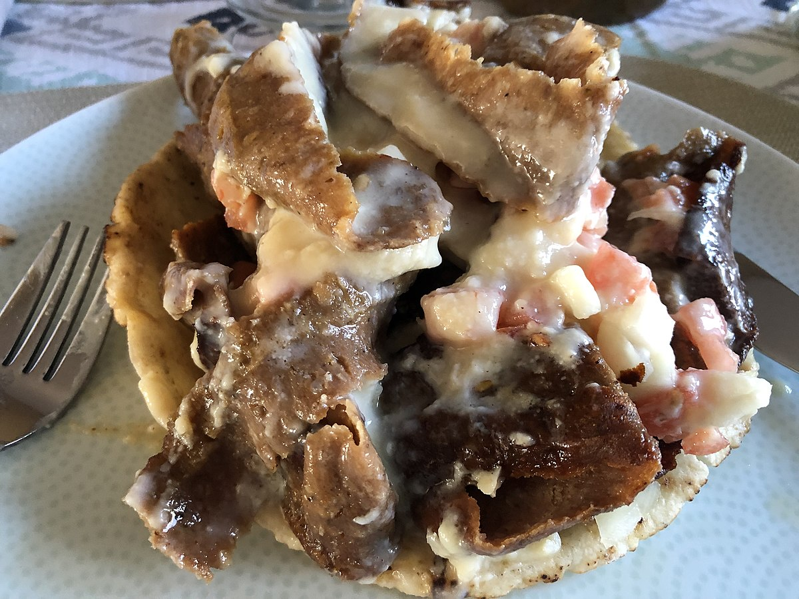

Donair

🌟 Description
The donair is a version of the Turkish doner kebab originated in Halifax,
Nova Scotia, Canada in the early 1970s. A proper donair consists of four
main ingredients: donair meat, toppings, donair sauce, and pita bread.
Donair meat is made from spiced ground beef sliced off a rotating cone.
The Donair starts with spiced ground beef cooked on a vertical spit, much
like the gyros cones so commonplace in Chicago. The beef is shaved off the
spit and served in pitas-Lindsay points out frequently that these are not
the pocketless pitas of a Greek gyros, but rather the puffier type of
pitas, with a hollow center that can be used as a pocket (but isn't for
this sandwich) made in the Levant. The meat is topped with diced onion and
tomato as opposed to the slices of onion and tomato more common to a
gyros, and dressed with a sweet and sour garlicky sauce based on
evaporated milk.
🍲 Ingredients
- Beef
- Onions
- Minced garlic
- Spices
- Salt
- Sliced tomatoes
- Lettuce
- Donair sauce
🔪 Steps
-
In a large bowl, combine ground meat, finely chopped onions, minced
garlic, salt, and spices (paprika, cumin, and black pepper). Mix well
until all ingredients are thoroughly combined.
-
Form the meat mixture into a loaf shape. You can also use a loaf pan to
help shape it. Wrap the loaf tightly in plastic wrap or foil.
-
Preheat your oven to 350°F (175°C). Place the wrapped meat loaf on a
baking sheet and bake for about 1 hour, or until fully cooked and the
internal temperature reaches 160°F (70°C). Alternatively, you can cook
it on a grill.
-
In a bowl, combine sweetened condensed milk, vinegar, minced garlic, and
spices. Mix until smooth. Adjust seasoning to taste.
-
Once cooked, let the meat loaf rest for a few minutes. Then, slice it
thinly.
-
Take pita bread or flatbread, and layer the sliced meat, sliced
tomatoes, and shredded lettuce. Drizzle donair sauce over the top.
- Wrap the pita around the fillings and enjoy your donair!